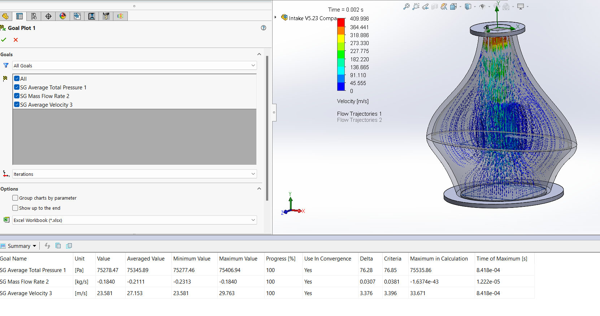
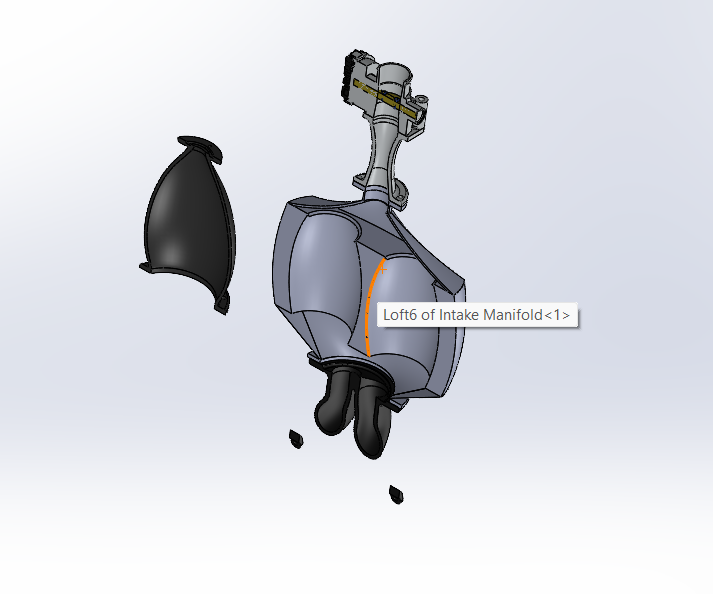
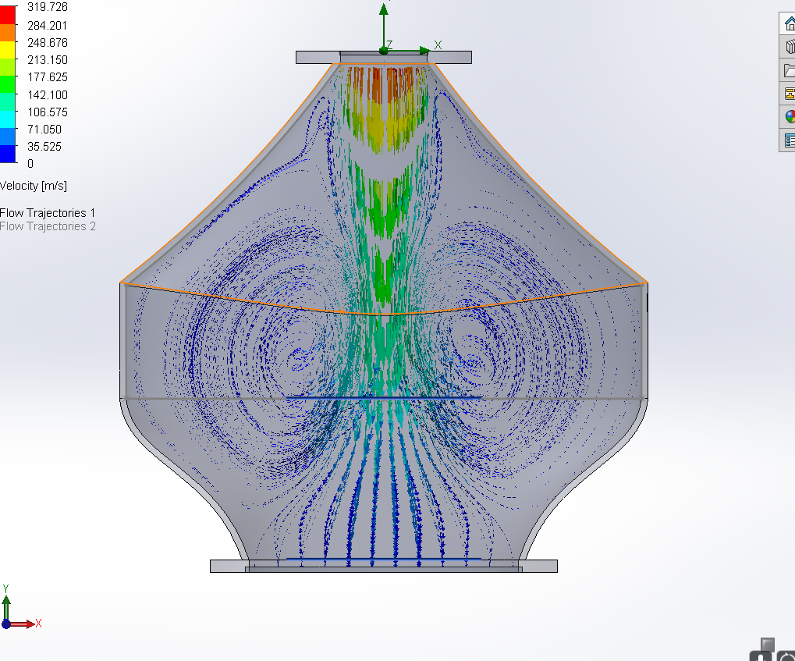

The intake plenum of a car is what connects the throttle body to the intake runners of an engine. The purpose of the plenum (along with the runners) is to optimize air flow into the engine. Improving the airflow will improve the engine's throttle response and allow it to intake more air, leading to more horsepower potential. Since the competition rules require a restrictor after the throttle, the goal is to increase the air mass flow rate allowing the engine to make more power.
Design Process
- Requirements: I had to design an intake with 1.5L-5L in volume that can legally (per FSAE rules) fit on the current car's intake plenum. It should feed all four cylinders an equal amount of air and should increase the overall mass flow rate comapred to the old design.
- Initial Idea: FSAE team member wanted me to first look into a "double lung" plenum design. However, it yielded poor results in CFD sims
- Exploring different designs: I took inspiration from previous intake designs, as well as other FSAE teams' designs. I modified and combined designs based on concepts that I saw, as well as using basic fluid mechanics principles (bernoulli's equation)
- Design Flexibility: An issue that occurred was that my first designs were very hard to make small changes to. If I wanted to change the diameter of a section slightly, the model would break. So for my new design, I made sure to make it easy to change parameters in CAD so I could converge onto the exact optimal dimensions by making fine adjustments based on what the CFD showed.
- Manufacturing:The intake would be 3D printed out of carbon fiber nylon filament.
Final Result
- Increased Mass Flow Rate: My final intake design had a mass flow rate of 0.211 kg/s while the original intake had a flow rate of 0.200 kg/s. This showed a 5.5% improvement which is significant since the restrictor greatly effects the amount of air the engine is able to intake.
- Manufacturing: Unfortunately, due to time contraints, the intake was never printed and tested on the BM-24 racecar as the team had to leave for competition. However I ended up 3D printing it out of PLA just for myself to enjoy.


